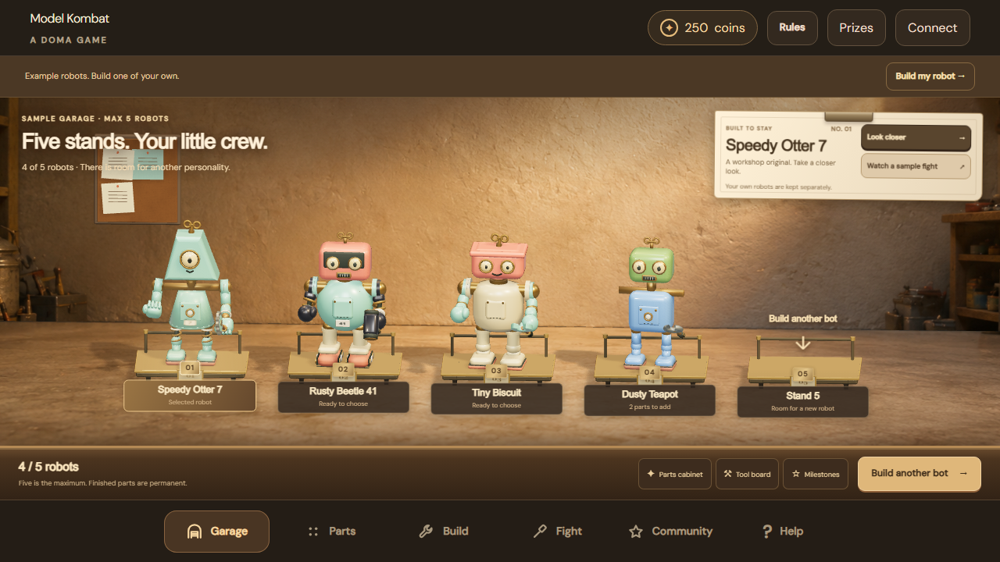
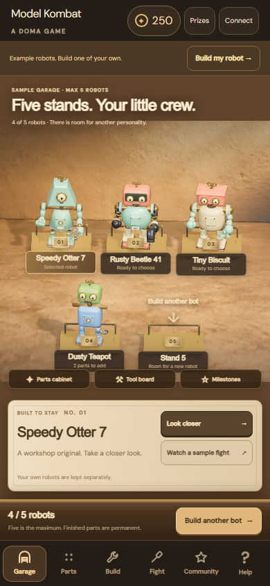
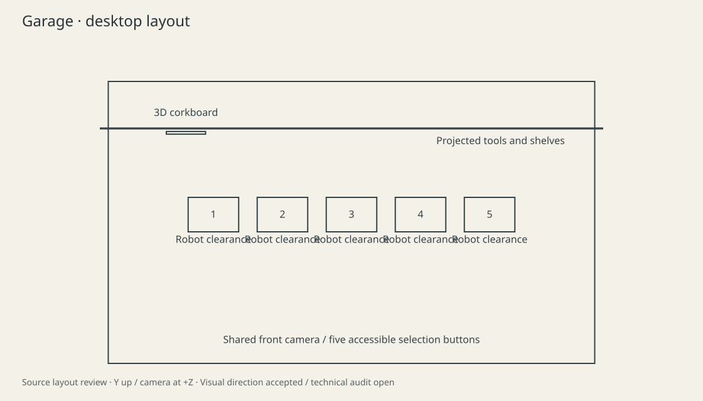
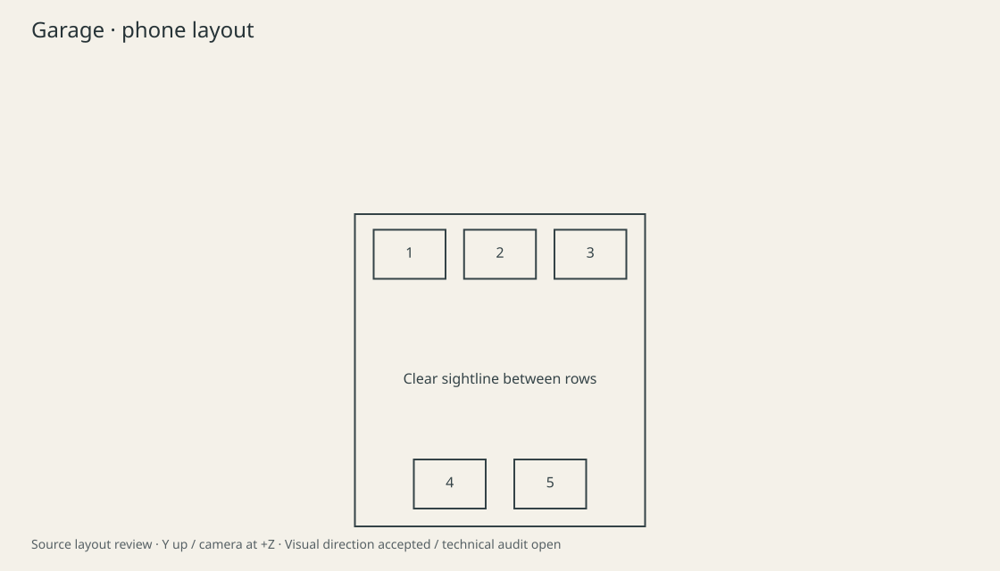
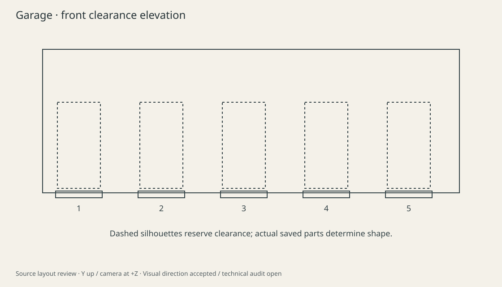

Garage: layout and reference review
The original concept remains the visual target. These diagrams describe the new shared 3D room. The live preview uses the actual game robots. The user said "keep going please" on 2026-09-10 after the concrete room previews. The layout and Form visual direction is accepted; Blender, final export and runtime audits remain open.
Open the interactive Form preview · Select Garage and compare desktop with Phone frame.

Actual game screenshot: desktop. Visual direction accepted on 10 September 2026; technical audits remain open.
Actual game screenshot: mobile. Visual direction accepted on 10 September 2026; technical audits remain open. Original concept reference: warm, handmade collectible-toy styling.
Original concept reference: warm, handmade collectible-toy styling.
Source layout: five robots, shared camera and physical support. Furniture leaves the robot silhouettes clear.
Phone layout: three robots behind two. Units and robot proportions remain unchanged.
Front clearance envelopes. The live Form preview is the evidence for actual shapes, shadows and contact.Review limits: existing room artwork is projected onto physical wall and floor planes, while robots, trolleys, portal framing and shared shadows are 3D. This fixed-camera set does not support a free camera through every workshop. A complete Blender export and authored eyelid animation remain outstanding. Desktop browser telemetry does not certify performance on a physical phone.